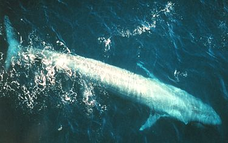

生物介紹：
藍鯨（學名：Balaenoptera musculus）是屬於鬚鯨小目的海洋哺乳動物。藍鯨不僅是地球上現存體型最大的動物，也是地球史上最大的動物之一，長超過33米，重達177公噸。藍鯨的身軀瘦長，背部青灰色，不過在水中看起來有時顏色會比較淡。與其他鬚鯨一樣，藍鯨主要以小型甲殼類（例如磷蝦）與小型魚類為食，有時也包括魷魚。藍鯨通常獨居或者和另一隻藍鯨共同生活。目前尚未知道，這些共居的藍鯨是長時間生活在一起，還是形成更為鬆散的關係。在食物高度密集的區域中，能看到多達50隻藍鯨聚集在在很小的範圍之內，但是牠們不會像其他鬚鯨那樣形成組織嚴密的大團體。
分布：
目前權威專家將藍鯨分類成3或4個亞種：北藍鯨包括北太平洋與北大西洋的族群、生活在南極海的南藍鯨、在印度洋與南太平洋被發現的侏儒藍鯨，與一個仍有疑問的亞種：大印度藍鯨，牠們也在印度洋被發現，儘管之前這個亞種被懷疑可能就是侏儒藍鯨。
原因：
直到20世紀初，在世界上幾乎每片海域中藍鯨的數量都相當多。在超過40年後，捕鯨者的獵殺使牠們幾乎滅絕。直到國際社會在1966年開始保育藍鯨後，藍鯨的數量才逐漸上升。一份2002年的報告估計目前世界上藍鯨的數量在5,000至12,000頭之間。與船隻發生碰撞或受困、糾纏在捕漁設備中時，藍鯨可能會受傷；海裡越來越多的噪音使他們難以互相溝通，甚至可能喪命。人類對於藍鯨的潛在威脅包括製造會在藍鯨體內累積的化學物品多氯聯二苯（PCB）。隨著全球暖化導致冰川與永久凍土層快速融化，並導致大量的淡水注入海中。考量到藍鯨根據海水溫度的遷移模式，環流瓦解將導致溫暖與寒冷的海水環繞全球，這可能會對藍鯨的遷徙造成影響。海洋溫度的改變也會影響藍鯨的食物來源，暖化趨勢也會減少鹽分的分布，這將會對的分布與密度造成重大的影響。